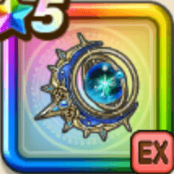

星海の天球儀
攻略班 9.0点 / 星辰のひらめきノヴァスパークフェイタル・ステラーステラーウォール彗星の祝福と天幻の加護
くわしい特徴
【レベル別習得スキル】 Lv1こうげき魔力+20 Lv3じゅもんダメージ+10% Lv10ドルマ属性じゅもんダメージ+10% Lv15星辰のひらめき（消費MP：最大MPの10%）3ターンの間、自身の会心と暴走の確率とダメージを上げる(戦闘中1回のみ使用可能) Lv20ノヴァスパーク（消費MP：80）敵全体に威力300%とランダムな敵に3回威力50%のデイン属性攻魔複合体技ダメージを与え、まれに両隣の味方の攻撃力か攻撃呪文威力を上昇 Lv30フェイタル・ステラー（消費MP：78）敵1体にドルマ属性の呪文絶大ダメージを与え、自身の攻撃力と攻撃呪文の威力を上げる。まれに自身に、ごくまれに右隣の味方に限界突破を付与 Lv35スライム系へのダメージ+5% Lv40悪魔系へのダメージ+5% Lv50ステラーウォール（消費MP：最大MPの2%）味方全員に一定量まで被ダメージを軽減する効果を付与。効果が消えると自身と両隣の味方の良い効果を延長するか一部効果の段階が上昇 Lv50彗星の祝福と天幻の加護（消費MP：最大MPの2%）行動開始時にMPを回復する効果を味方全員に付与。さらに自身が天地雷鳴士なら行動開始時に自身と右隣の味方にクシャラミの刻印を付与 【限界突破スキル】 1凸じゅもんダメージ+7% 2凸じゅもんダメージ+7% 3凸じゅもんダメージ+7% 4凸じゅもんダメージ+7%